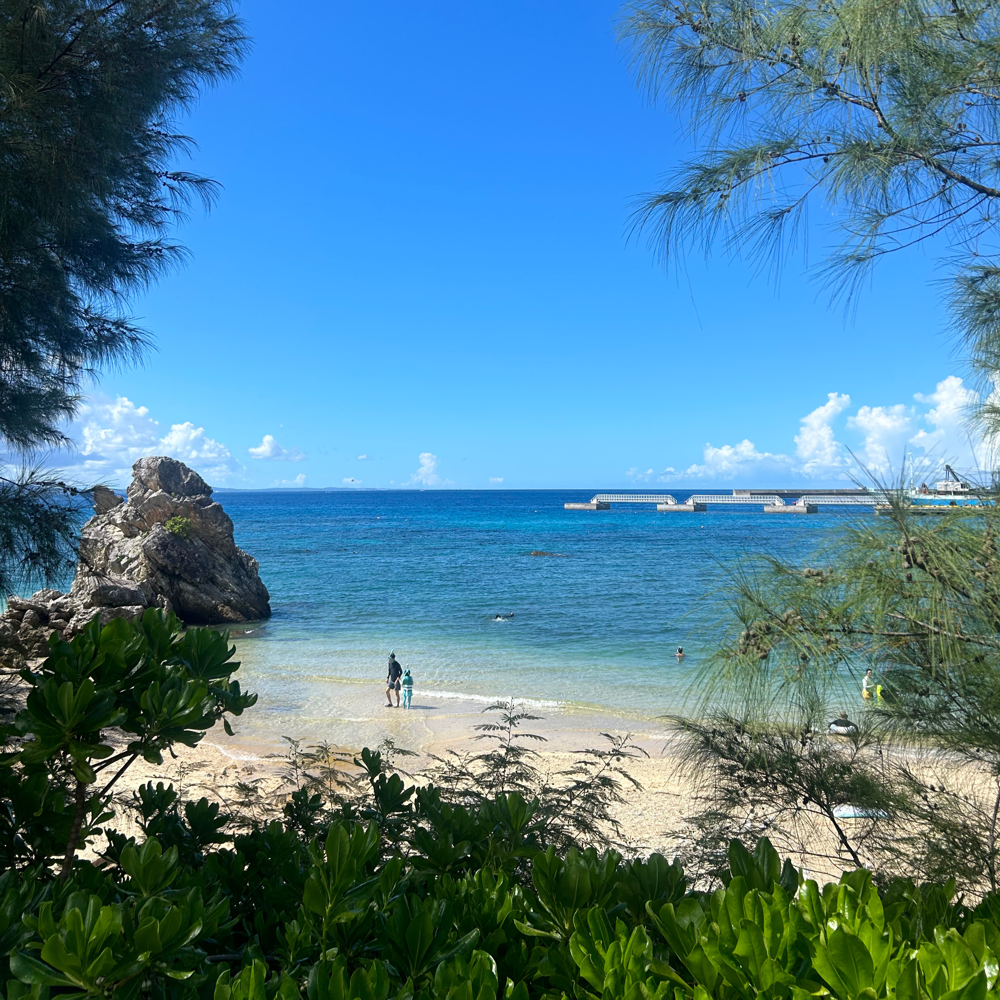
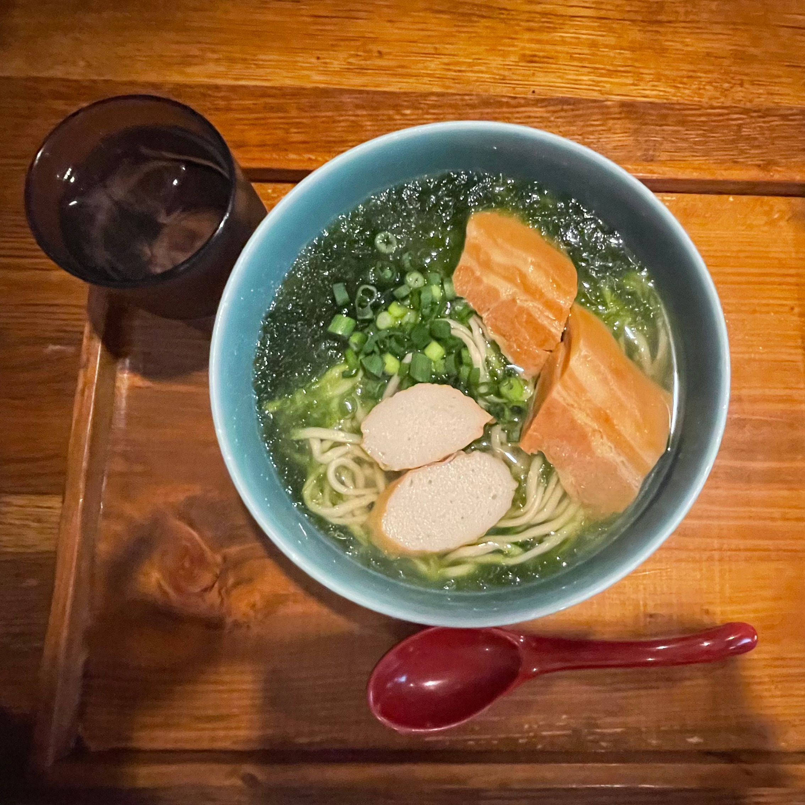
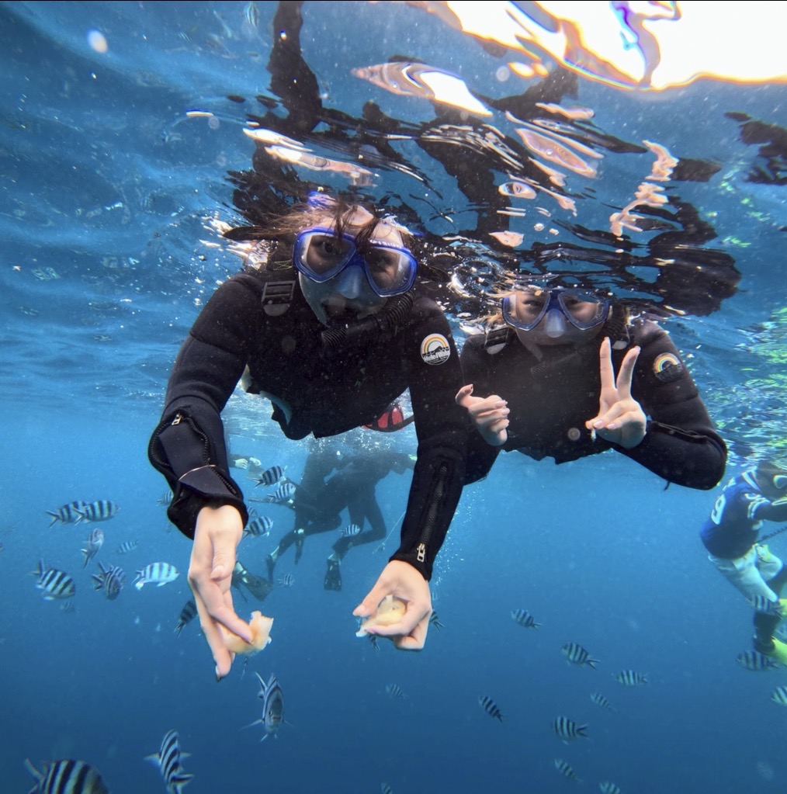
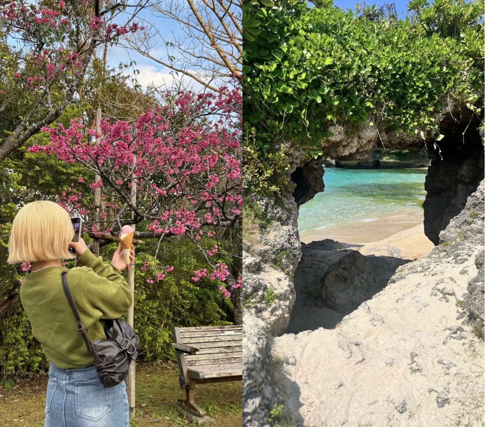

自然・絶景

「沖縄＝海」だけではない！木漏れ日の中を茶利で駆け抜けたり、 写真映えを狙える鍾乳洞を探索したり、陸の自然もテンション上がること間違いなし！

「沖縄＝海」だけではない！木漏れ日の中を茶利で駆け抜けたり、 写真映えを狙える鍾乳洞を探索したり、陸の自然もテンション上がること間違いなし！

沖縄そばやタコライスは、お店によって味の個性が異なるから何軒も巡りたくなる！ さらに、沖縄の定番ファーストフード「A＆W」や、みんな大好き「ブルーシールアイス」で、 旅の合間にワイワイ寄り道しよう♪

バナナボートやシュノーケリングで盛り上がるのはもちろん！スリル満点のジップラインやジャングルを めぐる冒険感強めのフィールド体験、沖縄ならではのモノづくり体験まで、思い出に残るイベントが盛りだくさん☆彡
【春】 春の沖縄はコートいらずで、２月の平均気温は約１７度と過ごしやすい気候です。２月前半は観光客が少なく落ち着いて巡れる穴場シーズンであり、航空券や宿も１年の中で最も安い時期の一つとなっており、 ホエールウォッチングを楽しめるほか、３月には各地で海開きも行われます。
【夏】 夏の沖縄は、写真映え間違いなしのエメラルドグリーンの海と青空の下で海水浴やマリンスポーツを満喫できる最高のシーズンです。その一方で、台風が接近しやすくなる時期でもあるため、天気や運行情報のこまめな注意が必要です。
